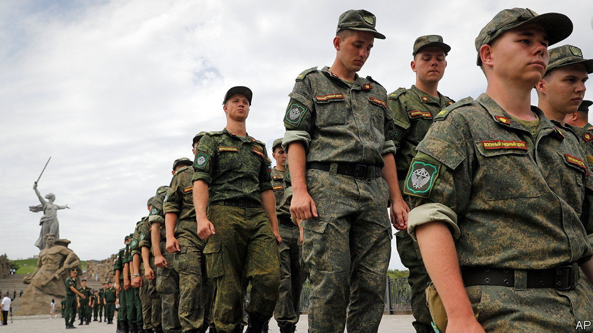
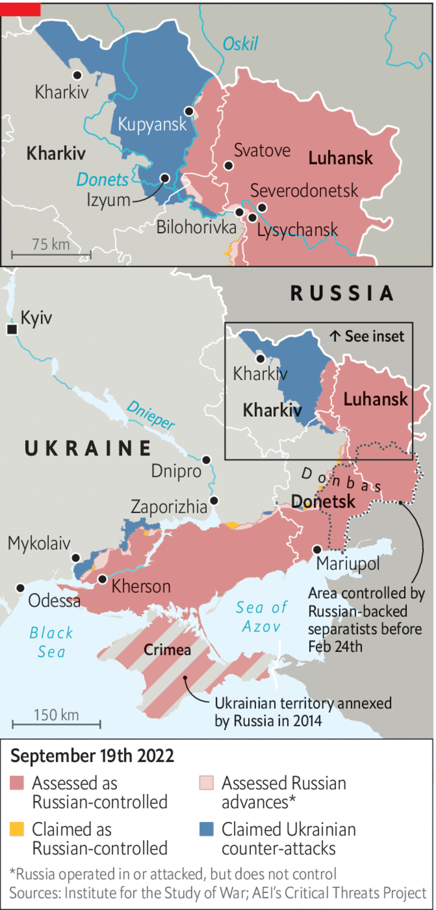

Vladimir Putin’s situation looks ever more desperate
A planned military mobilisation in Russia, and fake referendums in occupied Ukraine, are signs of weakness

Editor’s note (September 21st 2022): This piece was updated after Vladimir Putin ordered a partial mobilisation of reservists and promised to use “all means” to defend Russian territory.
DOES RUSSIA plan to declare a formal war on Ukraine and mobilise its reserves fully? “At the moment, no,” insisted Dmitry Peskov, the Kremlin’s slippery spokesman, on September 13th, days after Russia’s army was routed in Kharkiv province. “There is no discussion of this.” Yet in a televised address to the nation barely a week later Vladimir Putin, Russia’s president, declared a partial mobilisation of Russians with military experience. Sergei Shoigu, his defence minister, said the order, which took effect immediately, would extend to 300,000 reservists.
The move had been trailed a day earlier when the Duma, Russia’s parliament, amended the country’s criminal code to toughen penalties on soldiers who surrender, loot or disobey orders. The new law specifies “mobilisation, martial law and wartime” as aggravating conditions. It increases penalties for soldiers who abandon their units during such periods, and establishes new punishments for reservists who fail to respond to a summons. The law was evidently changed in anticipation of Mr Putin’s declaration.

Mr Putin has declared his assault on Ukraine a “special military operation”. Any ordinary Russian who calls it a war risks years in prison. Without a formal declaration of war, Mr Putin cannot legally keep conscripts in the army beyond their term of service or send them to Ukraine (unless they have four months of training). The result has been a serious shortfall of manpower, forcing Russia’s army to rely on mercenaries, prisoners and conscripts from occupied Ukrainian territory.
On the same day as this legislative signal, officials from the Luhansk and Donetsk People’s Republics (LNR and DNR), a pair of Russian puppet regimes in the eastern Ukrainian region of Donbas, said that they planned to hold referendums between September 23rd and 27th on joining Russia. Officials in Kherson and Zaporizhia, another pair of occupied provinces in the south, said they would follow suit.
In other words, they are planning rigged polls to allow Russia to annex more Ukrainian territory illegally. Russia recognised the two Donbas republics as independent states days before launching its war in February. At the time Sergei Naryshkin, the head of the SVR, Russia’s foreign intelligence agency, said that he favoured the annexation of both territories. The Kremlin held off from taking that step; indeed Mr Naryshkin was publicly upbraided for his suggestion. But in his televised address, Mr Putin expressed support for the four sham votes. “We have no moral right to hand over people close to us to be torn to pieces by executioners,” he said. “We cannot but respond to their sincere desire to determine their own fate.”
In one sense, the referendums would be largely meaningless. In Zaporizhia, Russia does not even control the capital city of the province. Although it does occupy most of Luhansk province—for now—it sits on only a portion of Donetsk. Moreover, Ukraine’s offensive in Kharkiv has severely weakened Russia’s military position in this region. The loss of Izyum, a transport hub and base, makes it harder for Russia’s army to advance into Donetsk. It also threatens its positions in Luhansk. On September 19th Ukraine’s army captured Bilohorivka in Luhansk, which lies 15-20km to the west of Lysychansk and Severodonetsk, cities in the province that Russia captured, at great cost and with considerable fanfare, in the summer.
One aim of holding the referendums might be to contain these Ukrainian advances. If Russia were formally to annex LNR and DNR the Kremlin could claim, falsely, that Ukrainian offensives in those areas were attacks on Russian soil. That would raise the stakes. In a barely concealed reference to Russia’s nuclear arsenal Mr Putin said that, “When the territorial integrity of our country is threatened, to protect Russia and our people, we will certainly use all the means at our disposal,” adding that “This is not a bluff.”
Some have noted a comparison with Crimea. The peninsula was illegally annexed by Russia in 2014 after a similarly bogus referendum. Russian officials have since issued ominous warnings that a Ukrainian effort to recapture it would represent a serious escalation. “Any attempt to encroach on Crimea is a declaration of war against our country,” fulminated Dmitry Medvedev, the deputy chairman of Russia’s security council and the country’s former president, in the summer. “Judgement day will [then] come very fast and hard.”
Western officials are anxious about the prospect of escalation should Russian front lines in the south collapse, enabling a Ukrainian ground assault on Crimea. Mr Putin’s aim might be to raise the same fears in the east, perhaps inviting Western pressure on Ukraine—reliant as it is on American and European arms and ammunition—to temper its attacks. That strategy would aim to capitalise on Western worries that Russia might use a nuclear weapon, something Joe Biden, America’s president, warned against publicly on September 18th.
Annexation might have more prosaic advantages, too. Mr Shoigu, in his address, insisted that conscripts would not be sent to Ukraine. But if large swathes of territory were, by legal chicanery, to become Russia, in the eyes of Russian law, then conscripts could presumably be sent to Kherson, Zaporizhia and Donbas if military circumstances demanded it.
Yet neither mobilisation nor annexation will solve Mr Putin’s problems. A full national mobilisation would be horribly unpopular in Russia. Though the war has been a disaster, most Russians have been spared its worst effects. The spectre of the conscription of young men and the mobilisation of reservists risks provoking widespread anger at Mr Putin’s regime while offering little short-term help on the battlefield. There is no simple way to train, equip and find officers for a vast new army. The process would probably take more than a year. Meanwhile, the cost of flights from Moscow to boltholes like Istanbul and Yerevan shot up, presumably as reservists sought a way to flee.
Annexation, too, is fraught with dangers. It would commit Mr Putin to the financial and political upkeep of a war-torn region under perpetual risk of attack by a Ukrainian army that is likely to be armed by the West for years to come. It would also oblige him to attempt seizing the large chunk of Donetsk currently held by Ukraine—a task that seems well beyond Russia’s beleaguered armed forces, which have spent the past few months launching costly frontal assaults against Ukrainian positions there.
Nor are Mr Putin’s nuclear threats wholly credible. Russia’s published nuclear doctrine does allow for the use of nuclear weapons against conventional threats to Russian territory, but only “when the very existence of the state is under threat”—a high bar that Mr Putin appeared to ignore in his televised threats. Ukraine’s army has been launching missiles and conducting raids against Crimea and facilities in Russia throughout the war, with little dramatic reply.
Even so, Russian nationalists, who have complained for months that Mr Putin has failed to wage a sufficiently savage and committed war, are cheering the latest moves. “These actions are evidence that the leadership of the Russian Federation nevertheless…has come to an understanding of the ‘total’...nature of the war on the so-called ‘Ukraine’,” wrote Igor Girkin, a firebrand Russian ex-commander in Donbas, on September 20th. Mr Putin, he said, “is preparing to fight ‘for real’”.■